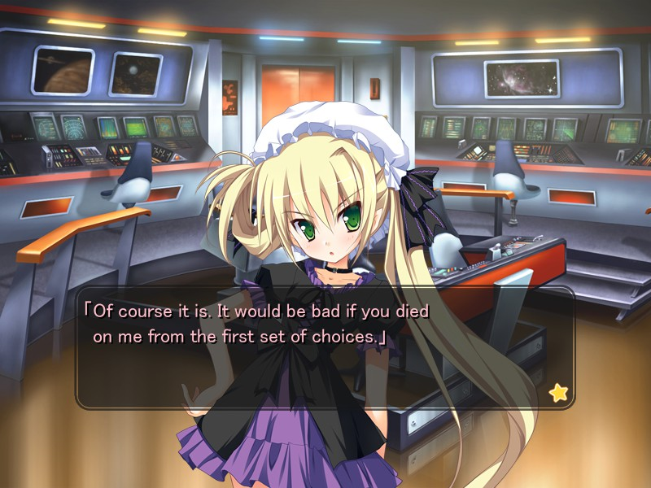
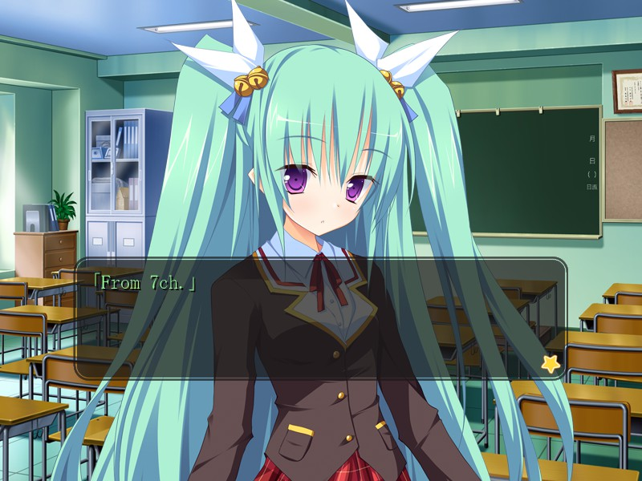
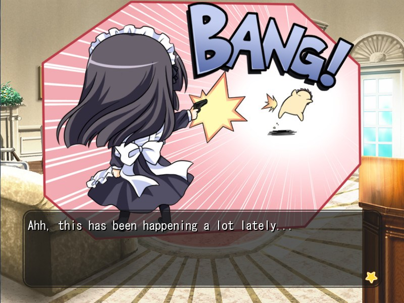
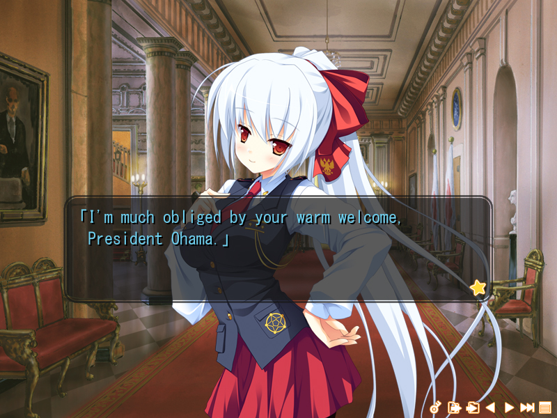
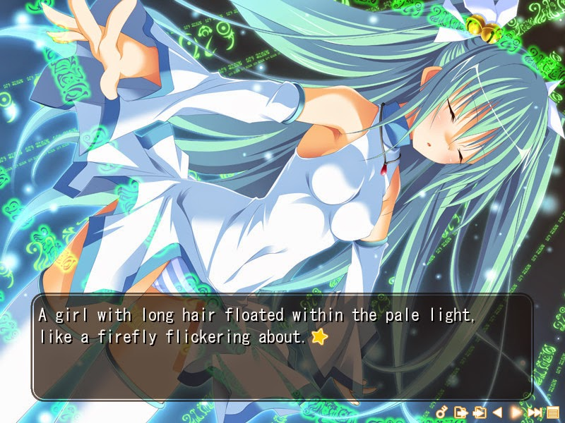
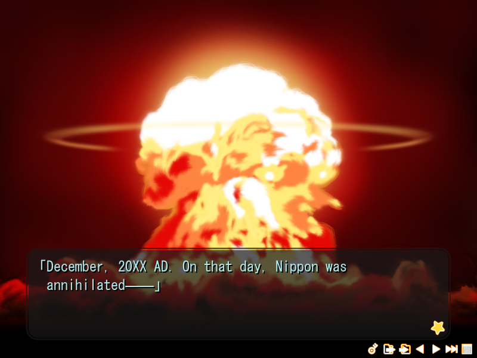

My Girlfriend is the President
Release Date:
January 10, 2012
Developer:
Publisher
Genres:
Comedy, Romance
Novel Length:
Anime Adaptation:
None
Prequel:
None
Sequel:
None

Reviews
"Overall, while I would have loved to have seen the plot with all eroge references removed and more of a focus on the political comedy nature that it delivered, I think this is an enjoyable eroge visual novel that while not taking itself too seriously, didn't take itself too lightly either. Alcot did a great job at developing this title and credits go to the translators and the Jast USA team for translating and picking up this title in the first place."
"All in all, it's still recommendable to play it and it's still enjoyable."
"My Girlfriend is the President is definitely up there with my favorite romantic comedies in a long time just because of how self aware it is. The fourth wall is basically nonexistent and everything is lampshaded by the characters."
About This Novel
It started out as an ordinary morning, woken up by my childhood friend. Had a good breakfast... complete with morning hard-ons. An ordinary, everyday eroge scene. Or... so it seemed. Things would never be the same from that day, as peaceful everyday life was blown to bits.
An accident on a spaceship heading to earth, causes it to crash into the office of the Prime Minister of Japan. The ministers end up in a state too horrible to look at. To avoid chaos, the alien choses a girl who happened to be there, and to make ends meet, brainwashed all of mankind.
Nippon adopts a presidential system overnight, and incredibly, a girl, my childhood friend, is the president. The world will answer to her every whim.
(From VNDB)
Technical Details
Platforms:
Windows
Resolution:
4:3
English:
Fully Translated
Animated Scenes:
None
Voiced:
Fully